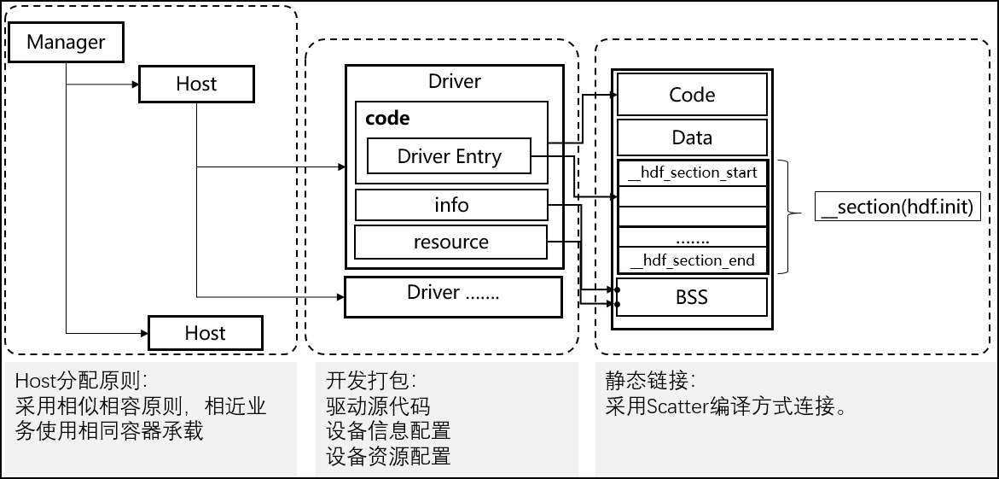

OpenHarmony HDF
Table of Contents
1 Introduction
OpenHarmony Driver Foundation adopts the master-slave architecuture design pattern, which is built around the framework, driver model, capability library and tools. the architecture is shown as below:

Figure 1: HDF Architecture
- Driver Framework - located in frameworks/core direcotry
- Provide the driver framework, mainly complete the function of driver loading and startup
- Provide the fexible deployment and expansion ability based on the object manager.
- Driver Models - located int the frameworks/model directory
- It provide the driver models, such as network device model.
- Driver Capability Library - located in the frameworks/capability directory
- Provide basic driving capability model, such as IO communication capability model.
- Driver Tools - located in the frameworks/tools directory
- Provide the tools such as HDI interface conversion, driver configuration and compilation.
- Driver Interface - located in lite/hdi directory
- Provide standardized driver interface.
- Support - located in the frameworks/support directory
- Provide standardized platform driver interface and abstracted system interface.
Figure 2: The Interaction of Driver and HDF
A driver is developed based on HDF mainly includes three parts:
- Device Driver - to complete the basic function.
- Driver Configuration - to indicates the load information of a driver
- Driver Resource - provide the hardware configuration information
For developers, the first thing to see is the driver entry, which is desciribed by DriverEntry which mainly includes three interfaces: bind, init and release. As shown in the following code:
struct HdfDriverEntry g_deviceSample = {
.moduleVersion = 1,
.moduleName = "sample_driver",
.Bind = SampleDriverBind,
.Init = SampleDriverInit,
.Release = SampleDriverRelease,
};
Bind Interface : to bind the device service to device object.
int32_t SampleDriverBind(struct HdfDeviceObject *deviceObject)
{
// TODO: Bind device service to device object.
// And you can also initialize device resources here.
return HDF_SUCCESS;
}
Init Interface: the HDF start to call the driver initialization interface after the device binding action is completed. In the case of the initialization is successful, the driver framework will decides whether to crate a device service interface externally or only visible to the current service interface accroding to the configuration file. otherwise, the driver framework will release the created device interface.
int32_t SampleDriverInit(struct HdfDeviceObject *deviceObject)
{
// TODO: Init hardware or other resources here.
return HDF_SUCCESS;
}
Release Interface: the driver framework will call this interface to notify driver to release all resources when user want to unload the dirver.
void SampleDriverRelease(struct HdfDeviceObject *deviceObject)
{
// Release all resources.
return;
}

Figure 3: Driver Install and Deploy
2 HDF In Detail
2.1 Start Device Manager
The DeviceManagerStart() function is called from SystemInit(), the detail show as below:
reset_vector_up.S
|-> bl main
|-> OsMain()
|-> OsSystemInit()
|-> SystemInit()
|-> DeviceManagerStart()
|-> OsUserInitProcess(VOID)
Device Manager will load device driver based on HCS configuration:
system_init.c
DeviceManagerStart()
|-> HdfIoServiceBind("dev_mgr", DEV_MGR_NODE_PERM);
|-> hdf_vnode_adapter.c
struct HdfIoService *HdfIoServiceAdapterObtain(const char *serviceName, mode_t mode)
|-> instance->StartService(instance);
|-> devmgr_service.c
int DevmgrServiceStartService(struct IDevmgrService *inst)
|-> int DevmgrServiceStartDeviceHosts(struct DevmgrService *inst)
devmgr_service.c
int DevmgrServiceStartService(struct IDevmgrService *inst)
|-> DevmgrServiceStartDeviceHosts(dmService);
|-> HdfSListInit(&hostList)
|-> HdfAttributeManagerGetHostList(&hostList) //HCS
|-> DevHostServiceClntNewInstance(hostAttr->hostId, hostAttr->hostName); // for each host
|-> DevHostServiceClntConstruct(hostClnt)
|-> installer->StartDeviceHost(hostAttr->hostId, hostAttr->hostName); // for each host
|-> hdf_driver_installer.c
int DriverInstallerStartDeviceHost(uint32_t devHostId, const char *devHostName)
|-> hostServiceIf->StartService(hostServiceIf);
|-> devhost_service.c
int DevHostServiceStartService(struct IDevHostService *service)
|-> devmgr_service_clnt.c
int DevmgrServiceClntAttachDeviceHost(uint16_t hostId, struct IDevHostService *hostService)
|-> devmgr_service.c
int DevmgrServiceAttachDeviceHost(struct IDevmgrService *inst, uint16_t hostId, struct IDevHostService *hostService)
|-> hostClnt->deviceInfos = HdfAttributeManagerGetDeviceList(hostClnt->hostId, hostClnt->hostName);
|-> hostClnt->hostService = hostService
|-> DevHostServiceClntInstallDriver(hostClnt);
|-> devHostSvcIf->AddDevice(devHostSvcIf, deviceInfo); //for each deviceInfos
AddDevice() start loading the driver and calling the driverEntry interface, and driver service will be published:
devhost_service.c
hostServiceIf->AddDevice = DevHostServiceAddDevice;
int DevHostServiceAddDevice(struct IDevHostService *inst, const struct HdfDeviceInfo *deviceInfo)
|-> device = DevHostServiceGetDevice(hostService, deviceInfo->deviceId);
|-> devNode = driverLoader->LoadNode(driverLoader, deviceInfo);
|-> hdf_driver_loader.c
struct HdfDeviceNode *HdfDriverLoaderLoadNode(struct IDriverLoader *loader, const struct HdfDeviceInfo *deviceInfo)
|-> driverEntry = loader->GetDriverEntry(deviceInfo);
|-> devNode = HdfDeviceNodeNewInstance();
|-> devNode->driverEntry = driverEntry;
|-> devNode->deviceInfo = deviceInfo;
|-> devNode->deviceObject.property = HcsGetNodeByMatchAttr(HcsGetRootNode(), deviceInfo->deviceMatchAttr);
|-> driverEntry->Bind(&devNode->deviceObject)
|-> devNode->hostService = hostService;
|-> device->super.Attach(&device->super, devNode);
|-> hdf_device.c
int HdfDeviceAttach(struct IHdfDevice *devInst, struct HdfDeviceNode *devNode)
|-> hdf_device_node.c
int HdfDeviceLaunchNode(struct HdfDeviceNode *devNode, struct IHdfDevice *devInst)
|-> driverEntry->Init(&devNode->deviceObject);
|-> HdfDeviceNodePublishService(devNode, deviceInfo, devInst)
|-> nodeIf->PublishService(devNode, deviceInfo->svcName)
int HdfDeviceNodePublishPublicService(struct HdfDeviceNode *devNode, const char *svcName)
|-> devsvc_manager_clnt.c
int DevSvcManagerClntAddService(const char *svcName, struct HdfDeviceObject *service)
|-> serviceManager->AddService(serviceManager, svcName, service);
|-> devsvc_manager.c
int DevSvcManagerAddService(struct IDevSvcManager *inst, const char *svcName, struct HdfDeviceObject *service)
|-> HdfServiceObserverPublishService(&devSvcManager->observer, svcName, 0, SERVICE_POLICY_PUBLIC, (struct HdfObject *)service->service)
|-> hdf_service_observer.c
int HdfServiceObserverPublishService(struct HdfServiceObserver *observer, const char *svcName, uint32_t matchId, uint16_t policy, struct HdfObject *service)
|-> HdfDeviceNodePublishLocalService(devNode, deviceInfo)
|-> HdfServiceObserverPublishService(&hostService->observer, deviceInfo->svcName, matchId, deviceInfo->policy, (struct HdfObject *)devNode->deviceObject.service);
|-> DevmgrServiceClntAttachDevice(deviceInfo, deviceToken);
|-> devMgrSvcIf->AttachDevice(devMgrSvcIf, deviceInfo, deviceToken)
|-> devmgr_service.c
int DevmgrServiceAttachDevice(struct IDevmgrService *inst, const struct HdfDeviceInfo *deviceInfo, struct IHdfDeviceToken *token)
The device driver also will be loaded when user will subscribe the driver service from user space:
From user space:
struct HdfIoService *HdfIoServiceBind(const char *serviceName, mode_t permission)
|-> hdf_syscall_adapter.c
struct HdfIoService *HdfIoServiceAdapterObtain(const char *serviceName, mode_t mode)
|-> int32_t HdfLoadDriverByServiceName(const char *serviceName) // if the driver is not loaded
|-> ioService->dispatcher->Dispatch(&ioService->object, 0, data, NULL);
|-> hdf_syscal_adapter.c
int HdfSyscallAdapterDispatch(struct HdfObject *object, int code, struct HdfSBuf *data, struct HdfSBuf *reply)
|-> int ret = ioctl(ioService->fd, HDF_WRITE_READ, &wrBuf);
|-> hdf_vnode_adapter.c // enter into kernel space
int HdfVNodeAdapterIoctl(struct file *filep, int cmd, unsigned long arg)
|-> int HdfVNodeAdapterServCall(const struct HdfVNodeAdapterClient *client, unsigned long arg)
|-> int ret = client->adapter->ioService.dispatcher->Dispatch(client->adapter->ioService.target,
bwr.cmdCode, data, reply);
|-> devmgr_service_start.c
int DeviceManagerDispatch(struct HdfObject *stub, int code, struct HdfSBuf *data, struct HdfSBuf *reply)
|-> int DevSvcManagerClntSubscribeService(const char *svcName, struct SubscriberCallback callback)
|-> serviceManager->SubscribeService(serviceManager, svcName, callback);
|-> devsrv_manager.c
int DevSvcManagerSubscribeService(struct IDevSvcManager *inst, const char *svcName, struct SubscriberCallback callBack)
|-> devmgr_service.c
int DevmgrServiceLoadDevice(const char *svcName)
|-> int DevmgrServiceFindAndActiveDevice(const char *svcName, bool isLoad)
|-> DevmgrServiceActiveDevice(hostClnt, deviceInfo, isLoad); //Iterate each hosts in devMgrSvc and compare deviceInfo->svcname wiht the parameter svcName, if eque, then call this function
|-> devHostSvcIf->AddDevice(devHostSvcIf, deviceInfo);
|-> adapter->fd = open(realPath, O_RDWR);
|-> ioService->dispatcher.Dispatch = HdfSyscallAdapterDispatch;
user will call ioService->dispatcher.Dispatch() interface to interactive with driver.